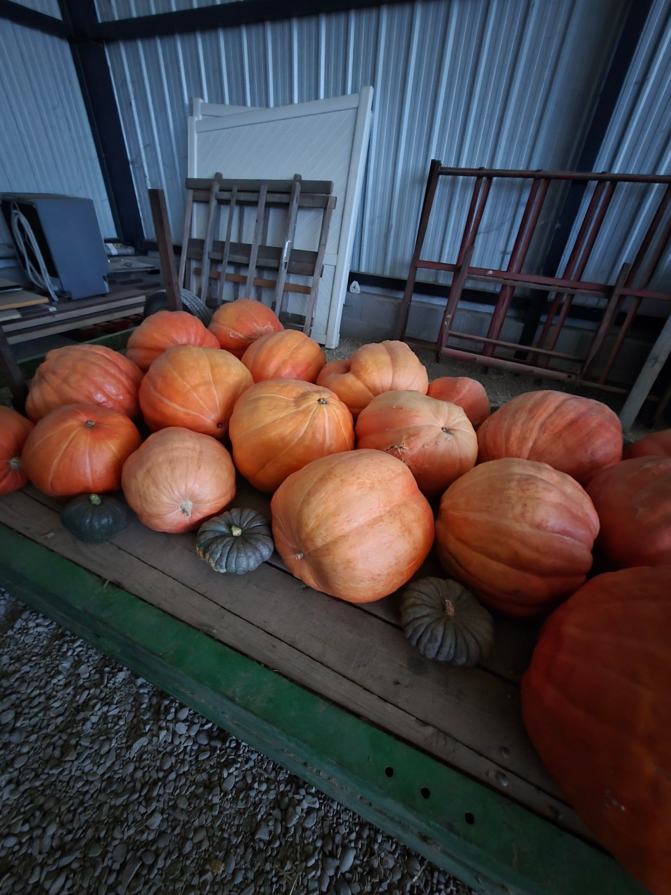

Pommes de terre
- Sac de 10 kg8,00 €
- Sac de 25 kg15,00 €
Vente directe à la ferme · Saint-Bernard (Ain)
Pommes de terre, oignons, courges, cardons, cerises en saison… Récoltés ici, vendus ici.
En ce moment
Les étals changent avec les saisons. Prix indicatifs, à confirmer sur place.


La spécialité de la région, en frais pendant la saison.

Effilés à la main et mis en bocal. Cardons, eau, sel : c'est tout.

Musquées, potirons, courges bleues, citrouilles et courges décoratives.

Acacia, châtaignier, toutes fleurs, sapin.
Au début de l'été, venez chercher des cerises cueillies le jour même.
La ferme
Producteur local de fruits et légumes à Saint-Bernard, Sébastien Boyer propose une vente directe à la ferme de produits frais et de saison.
Pas d'intermédiaire, pas de long transport : ce que vous achetez a poussé juste à côté.


Nous trouver
Ouvert à partir de 8h.
Un doute ? Appelez avant de passer.